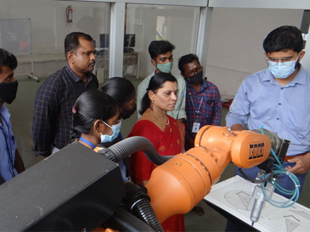
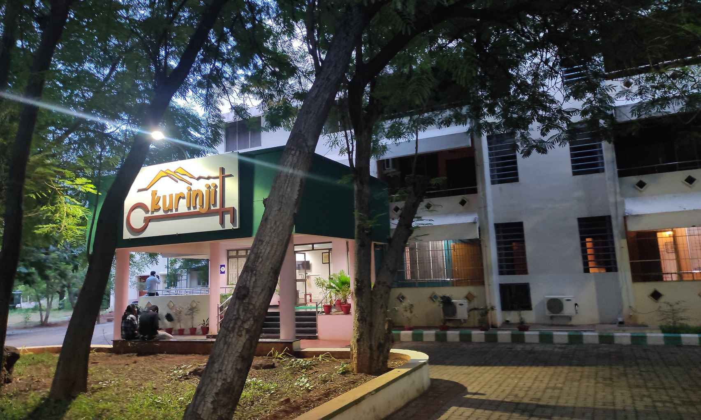

Central Workshop
The Central Workshop is a common facility which provides fabrication services for projects and
prototype fabrication to all the students and faculty members of the Institute. It has three main
sections. These are the fitting and carpentry section, the machine shop, and the welding and foundry
section. These workshops have machinery needed for basic fabrication requirements.
The first year students are trained in the rudimentary techniques of fabrication in these workshops.
The trained personnel in these workshops provide their skills for advanced fabrication for projects
and prototype fabrication.
The fitting workshop has vertical drill-presses of various sizes and workbenches fitted with
vices . The carpentry workshop has band-saws and various power tools used for woodworking. The
welding workshop has the latest microprocessor controlled welding machines and gas welding
apparatus. The machine-shop has various lathes used for turning jobs.
Central Library

The Institute has a modern Central Library with more than two and a half lakhs of documents
consisting of Technical books, reports, standards, CD-ROMS, Audio Visual Educational Cassettes, and
back volumes of journals. The library subscribes to 83 periodicals (print) plus 8210+ e-Journals and
1995+ e-books besides a holding of 17690 back volumes of journals. The library also contains 16,750
books in the Book Bank scheme.
Digital Knowledge Centre has been established with 35 Ubuntu Computer systems with an internet
connection. Wi-Fi facility has been provided for laptop users. CCTV Web cameras have been fixed in
the Central Library and the entire building is under camera surveillance. RFID Technology of
Document Identification and Library Security System has been implemented for the library functions
and services from 29th March 2013.
CEDI
Center for Entrepreneurship Development and Incubation (CEDI) is an independent company promoted by
the National Institute of Technology, Trichy. CEDI was established in 2012 and is currently
registered under Section 8 of the Companies Act. CEDI has created a comprehensive Entrepreneurial
ecosystem at NIT, Trichy. CEDI enables young entrepreneurs to initiate technology start-up companies
for commercial exploration of technologies developed by them in the areas of ICT and Electronics.
CEDI is implementing a project Technological Incubation and Development of Entrepreneurs
(TIDE) funded by the Department of Electronics and Information Technology, Ministry of
Communications & Information Technology, Govt. of India to promote start-up companies in the areas
of ICT and Electronics. CEDI cultivates a rare breed of entrepreneurs by incubating, accelerating,
mentoring, and funding innovative start-ups. CEDI facilitates the Incubatee companies to access
NITT’s common Infrastructure facilities, departmental laboratories, and other resources of NITT for
their product development purposes. Incubate companies have access to the brainpower of NITT's
high-caliber students through internships.
CoE in Manufacturing

The CoE in Manufacturing, established in 2018 at National Institute of Technology, Tiruchirappalli,
operates with a primary focus of creating a robust technical education eco-system through its
experience in industrial products and services. There are 12 sophisticated Laboratories for Design
and Validation, Advanced Manufacturing, Test and Optimization, Automation, Electrical and Energy
savings, Process Instrumentation, Mechatronics, CNC Machines, CNC Controller, Robotics, Rapid
Prototyping and Internet of Things which provides opportunity for promising innovations. This
multi-faceted unique centre offers skill development courses, Internships, Research and Development
assistance and Industrial consultancy services across various sectors.
Estate Maintenance
The Estate Maintenance department has the responsibility to maintain the campus spread over an
extent of 777.77 acres. The department is headed by an Estate Officer. Registrar is nominated as the
Estate Officer of this Institute.
- Estate Office engineers are in charge of civil and electrical maintenance. They are also in
charge of the new construction works.
- The Electrical wing is maintaining all HT/LT Electrical equipment on our campus. The Electricity
for our campus is maintained by EMC after receiving the 11-kV power supply from TANGEDCO. Our
Institute is availing dual source of power supply from the TANGEDCO to minimize the failure
time/downtime. (One source is from Thuvakudi Substation (main) and the second source is from
Vazhavandhan Kottai Substation).
- There are 2 x 1000 kVA Transformers with allied VCB panels in the main powerhouse. In addition
to the 1000 KVA TFs, 11 Nos. 500 KVA TFs (11/0.415 kV) were located in 10 locations on our
campus.
- The total Installed capacity of the 12 Nos Stand by DG of various capacities is 3072.5 kVA. This
includes 2x750 kVA HT DG and 2x500 kVA LT DG available in the powerhouse.
- The Electrical wing is also installing commissioning and testing all electro-mechanical
equipment such as air conditioners, Lifts (24Nos.), domestic water and sewage water pumps, etc.,
Guest House

The CoE in Manufacturing, established in 2018 at National Institute of Technology, Tiruchirappalli,
operates with a primary focus of creating a robust technical education eco-system through its
experience in industrial products and services. There are 12 sophisticated Laboratories for Design
and Validation, Advanced Manufacturing, Test and Optimization, Automation, Electrical and Energy
savings, Process Instrumentation, Mechatronics, CNC Machines, CNC Controller, Robotics, Rapid
Prototyping and Internet of Things which provides opportunity for promising innovations. This
multi-faceted unique centre offers skill development courses, Internships, Research and Development
assistance and Industrial consultancy services across various sectors.
Hospital

The institute hospital is located within the campus, it is located amidst the hostel/residential
zone and the academic zone.
The NITT Hospital provides primary health care round the clock on all the days.
NITT Hospital has casualty, OP & IP facilities, 24 hours fully equipped ambulance, 24 hours pharmacy
and a clinical laboratory working during 07:00 a.m. to 09:00 p.m.
Timings
OP ( Outpatient) Services - Monday to Friday :7.30 AM to 7.30 PM
Saturday, Sunday& Government holidays: 8 AM to 1 PM
Casualty/ Emergency services -24*7 on all days
Contacts
- Contact No: 0431-2503860
- Email: hospital@nitt.edu
- Ambulance Contact No.: 9486001162
Wards
1. Casualty with Nebulization, Oxygen, Suction, Vaccine - TT, ARV
2. Female Ward
3. Male Ward
4. Isolation Ward
5. Minor OT
Medical Equipments
1. ECG
3. Nebulizer
4. Autoclave
5. Defibrillator
6. Multipara monitor
Hostel
There are 22 boys' and 6 girls' hostels. Together they accommodate 6966 undergraduate,postgraduate students and research scholars.One more hostel is under construction.
Committees consisting of elected student representatives and Wardens manage them.
Mess

There are Nine Messes in all
- M/s Shree Sai Services - North Indian Menu - Opal Mess GF
- M/s Sri Guru Raghavendra Foods (P) Ltd - South Indian Menu - Opal Mess FF
- M/s Sakthi's Kitchen (P) Ltd - South Indian Menu - Mega Mess I GF
- M/s Neelkesh Caterers (P) Ltd - North Indian Menu - Mega Mess I FF
- M/s Swathi Caterers - South Indian Menu - Mega Mess II GF
- M/s Annapurna Catering Services - North Indian Menu - Mega Mess II FF
- M/s Vinayaka Caterers - Mixed Indian Menu - Kailash Mess (Tripti)
- M/s Ideal Catering Services (P) Ltd - Andhra Menu - Annapurna Mess (Swadh)
- M/s Shaji Caters - Kerala Menu - Sabari Mess (Nalan)
Security
The Security department comprises the Security Officer , three Sergeants and 41 security guards. The guards are divided into three sections and allotted duties round the clock in three shifts on rotation basis. One Sergeant is posted in each shift to supervise the security guards. Most of the security guards are retired defense service personnel. Their supreme duty is to look after the assets of the Institution besides maintaining law and order on the campus.
Sports Center

The Sports Centre which is the hub of sports activities was inaugurated 1999.
The Sports Centre is a multi-facility multi-disciplinary sports complex aimed at developing well-rounded personalities of students. The building has an indoor stadium with two shuttle courts and a fitness centre. The construction of the Sports Centre has been carried out by the State P.W.D. at a cost of Rs. 97 lakhs.
Training & Placement
The department of Training and Placement, the marketing division of the institute has these following functions and responsibilities:
- Nurtures Industry Institute interaction, by organizing and coordinating frequent industrial visits, inplant training and projects of industrial relevance for the students, with the sole aim of zeroing down the hiatus between the industry and the academia.
- Receives and forwards the feedback pertinent to curriculum improvement from the visiting companies to the faculty, to ensure that the curriculum follows the latest industrial trends.
- Helps every student define his/her career interest through individual expert counseling.
- Organizes and coordinates Campus Placement Program, to fulfill its commitment of a job to every aspirant.
- Over the years, the department has maintained symbiotic, vibrant and purposeful relationship with Industries across the country and as a result, has built up an impressive placement record both in terms of percentage of registered students placed, as well as the number of companies visiting the campus.
- Over 220 companies participate in the placement process every year. The institute enjoys best placements when it comes to PG programmes.
Transport

The Transport Section, NITT is managed by a transport committee under Dean (Institute Development) with a motto to help students, staff and administration
Transport Section, NITT has 4 buses, 1 Swaraj Mazda, 1 Tempo traveler, 1 Indigo Car, 1 Bolero, 1 Eicher, 1 Omni and 1 Ambulance
- We provide buses for academic, industrial, cultural and festival activities to students and staff
- We provide Shuttle services within campus for students on working days.
- We provide Hostels - Exam centre services on examination days from hostels to exam centres.
- We provide Students Staff Service to Tiruchirappalli (SSST) trips for NITT students and employees
- We provide School trips to wards of faculties and staff under facilities to Faculties and staff of NITT
- We provide Market trip on Saturday